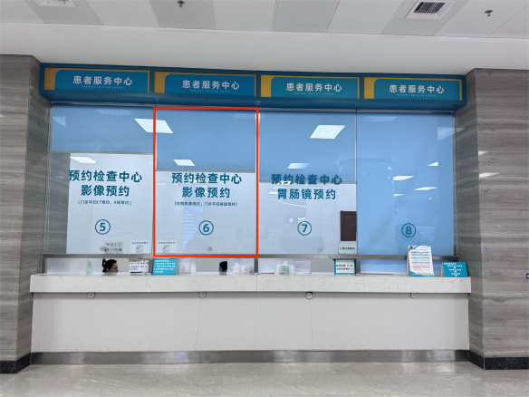
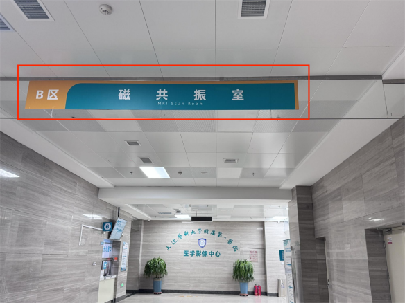
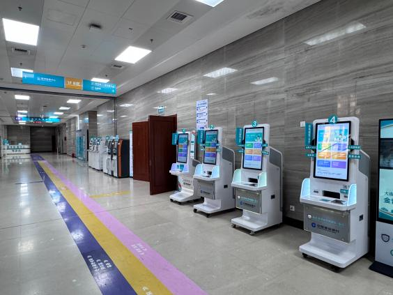

2楼缴费完成后
平扫磁共振请去1楼B区6号窗口先预约
按约定时间，平扫磁共振去负1楼B区医学影像中心的磁共振扫描室
打印胶片和报告请去1楼B区自助机进行打印



MRI 依靠磁场 + 无线电波成像，无X射线、没有辐射，适合查颈椎、腰椎、脊髓、神经、肌肉软组织、关节、带状疱疹神经水肿、梨状肌、肩袖损伤等疼痛科常见病变；体内有金属异物、植入器械者不能随意做。
⚠️ 全身所有金属全部取出：
👚 衣物建议：穿纯棉无金属扣子、无印花烫金的宽松家居服，医院也可提供检查专用病号服。